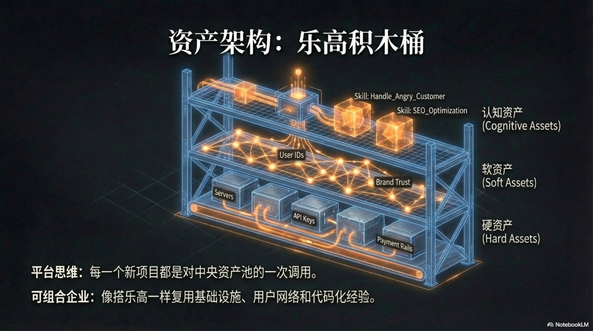

5.1 Asset Pool Theory

Asset Pool Theory is the cornerstone of the “One-Person Unicorn” operating model. It requires founders to shift completely from “project thinking” to “platform thinking,” viewing their operational entity not as one or more isolated projects, but as a vast, fluid central asset repository. Every new project we launch is essentially just a “call” and “combination” of resources from this central asset library. Projects may succeed or fail, but regardless of the outcome, the process itself feeds back into the asset pool in some form, enriching it.
The power of this model lies in shifting the cost structure of entrepreneurship from being dominated by “one-time project expenditures” to “amortizable platform construction.” When the scale and quality of the asset pool reach a critical point, the marginal cost of launching a new business will approach zero. This is the fundamental reason why a “One-Person Unicorn” can simultaneously venture into multiple fields and explore the market with extreme efficiency. To better understand this theory, we must redefine “assets” and divide them into three interconnected layers: Hard Assets, Soft Assets, and Cognitive Assets.
Reshaping the Balance Sheet: Hard and Soft Assets
In the AI-native era, the balance sheet in the traditional accounting sense can no longer accurately measure the true value of an enterprise. The importance of tangible assets like factories, equipment, and inventory has been drastically diluted, replaced by a series of intangible, digitizable capabilities and resources.
Economic reality has long confirmed this fundamental shift: authoritative research shows that the share of intangible assets in the value of S&P 500 companies soared from 17% in 1975 to 90% in 20201. A recent report by the World Intellectual Property Organization (WIPO) further points out that in 2024 alone, the value of global corporate intangible assets grew by a robust 28%, surpassing historical highs2. This means a company’s core value is no longer its physical entities, but its brand, data, and the “intelligence” constituted by intellectual property. For a one-person enterprise, its true “balance sheet” records the sum of all executable forces it can mobilize.
Hard Assets: The Enterprise’s “Digital Plumbing System”
Hard Assets constitute the “infrastructure” or “physical skeleton” of enterprise operations. They are resources that are relatively stable, have clear functionality, and can be programmatically called upon. They are like a city’s water, electricity, and network systems—users may not notice them daily, but if they are missing, the entire business organism is instantly paralyzed.
-
User IDs & Data: This is by no means a simple customer list. In an AI-native enterprise, a User ID is the key to a vast “user behavior graph.” It records every click, purchase, interaction, and even emotional inclination of the user. Once structured and tagged, this data itself becomes a core asset. When launching a new project, you can precisely filter out the early users most likely to convert, rather than needing to restart cold starts and market education like traditional enterprises. The value of this asset is directly proportional to its scale and “cleanliness.”
-
Payment & Compliance Channels: This includes payment gateways (like Stripe, PayPal) that are connected and running stably, corporate bank accounts, and legal and compliance qualifications required in specific industries (such as finance, medical). For any startup, building this system is a process full of cumbersome procedures and uncertainty. But once settled as an “asset,” it becomes a “plug-and-play” module instantly callable by any new business. The time from a new product’s birth to revenue realization can be shortened from weeks to hours.
-
Server Resources & API Keys: This is the enterprise’s “digital land” and “energy interface.” It includes not only computing resources like cloud servers and databases but, more critically, API keys to the world’s top AI models (such as OpenAI, Anthropic, Google). These keys are far more than a string of authentication characters. They are closely linked to the concept of “Resource Quota & Fluidity” mentioned in Chapter 3. Every API Key is bound to budget monitoring, rate limits, and error alerting mechanisms. It is a tightly managed “valve,” not an open “faucet.” This allows the enterprise to manage its “compute”—a core means of production—as granularly as financial budgets, clearly separating and accounting for compute costs across different business lines.
-
Legal Entity & Domains: The corporate legal entity, registered trademarks, and a matrix of high-quality domains together constitute the enterprise’s “digital identity” and “intangible real estate.” A concise, memorable domain with brand association is itself a scarce asset that can significantly lower subsequent marketing costs. A unified legal entity can be shared across multiple business lines, simplifying legal and financial complexity.
The common characteristic of Hard Assets is their high “reusability” and “stability.” Once established, they can provide foundational support for all future businesses with extremely low maintenance costs. One of the early goals of a one-person enterprise is to complete the laying of this “plumbing system” as quickly as possible.
Soft Assets: The Enterprise’s “Gravitational Field & Prestige”
If Hard Assets are the skeleton of the enterprise, then Soft Assets are its temperament, reputation, and influence—the “gravitational field” it forms in the digital world. They are hard to measure directly in money, but are often the key to long-term success.
-
Community Relationships: This does not refer to follower counts on social media, but to those “super users” and “die-hard fans” who have formed deep emotional links with your brand. They are your first product testers, most enthusiastic advocates, and even allies who defend you in times of crisis. This network, woven from trust and shared values, is the enterprise’s most solid moat. AI can greatly assist in maintaining this network (e.g., auto-replies, content distribution), but its core establishment still relies on the founder’s sincere value output and continuous interaction.
-
Brand Reputation: In an era of information explosion where AI can generate massive amounts of content, consumer “attention” has become the ultimate scarce resource. A brand is a “cognitive shortcut” that helps consumers reduce choice costs. A trustworthy brand implies a promise of quality and assurance of style. The construction and maintenance of this asset are closely related to the “Constitutional AI” mentioned in Chapter 4. When brand values like “honesty,” “customer first,” and “pursuit of excellence” are encoded as AI behavioral guidelines, every external interaction of the enterprise—whether customer service dialogue, marketing copy, or product design—is subtly recharging the “Brand Reputation” account. Conversely, a single unconstitutional act can cause irreversible damage to this most precious asset.
-
Traffic Channels: This refers to channels fully owned by the enterprise that can directly reach users, such as a high-authority blog, a large subscription email list, or an active private community. Unlike advertising traffic that requires continuous payment, the marginal reach cost of owned channels is almost zero. It can serve as a “launch pad” for any new project, bringing the first wave of seed users and valuable market feedback to a new product within hours.
The core of Soft Assets is “Trust” and “Influence.” Their accumulation process is slow and non-linear, requiring long-term, consistent effort. However, once formed, they endow the enterprise with powerful “potential energy,” giving it an asymmetric advantage in competition.
Cognitive Assets: The Enterprise’s “Executable Soul”

Hard and Soft Assets together form the powerful “body” and “halo” of the enterprise, but this body needs a wise “brain” to command it. In traditional enterprises, the vast majority of this “brain’s” wisdom exists in an extremely fragile form—the personal experience of employees. This is a problem that has plagued modern enterprise management for a century: Corporate Amnesia. When a senior salesperson leaves, they take with them not only customer relationships but also their keen intuition for customer needs, unique skills for handling tricky problems, and negotiation strategies accumulated over years. These precious, unspoken “tacit knowledge” vanish with the employee’s departure, forcing the company to pay tuition for the same mistakes over and over again.
AI-native enterprises solve this problem fundamentally by introducing a third, and most core, category of assets—Cognitive Assets. The essence of Cognitive Assets is to transform the vague, ineffable, intuition-based “experience” of human experts into “codified knowledge” that machines can understand, execute, and inherit. This process of transforming personal insights into organizational capabilities can be seen as a modern AI implementation of the SECI model—a foundational theory in knowledge management proposed by Ikujiro Nonaka and Hirotaka Takeuchi in The Knowledge-Creating Company.3 For the first time, an enterprise’s core competitiveness can settle from a flowing brain dependent on “people” into a permanent asset belonging to the “company.”
Codification of Experience: From “Spark of Insight” to “Reusable Module”
This transcription process is itself a perfect embodiment of “Digital Taylorism” and the PDCA evolutionary cycle in practice. It follows a rigorous flow from concrete to abstract. Let’s dissect this process with a specific scenario:
Scenario: Handling a Tricky Customer Complaint
-
Do & Check: A gold-medal customer service representative successfully pacifies an angry customer using excellent empathy and communication skills, converting them into a loyal user. This successful interaction is fully recorded by the system (corresponding to the “Permanent Memory” in Chapter 3). The system automatically tags this interaction as a “high-quality resolution case” via
LLM-as-a-Judge(the “Silicon-based Jury” in Chapter 4). -
Act (Process/Summarize): The tagged case is automatically sent to a “Knowledge Extraction Agent.” This Agent’s task is to analyze the entire conversation and decompose it into structured elements:
- Identify Customer Intent: What was the customer’s core demand? (Product defect? Service dissatisfaction?)
- Extract Communication Strategy: what soothing language did the rep use at key nodes? (“I fully understand how you feel,” “Let’s find a solution together”)
- Summarize Solution: What compensation plans were offered? Under what circumstances are they applicable?
- Generate SOP: The Agent automatically generates a structured “Best Practice Document (SOP)” from the above analysis.
-
Plan: This SOP document is not shelved. It is further processed into a “skill” executable by AI.
- Prompt Engineering: The core strategy of the SOP is converted into a highly structured Prompt template. For example: “You are a top customer service expert with empathy. When a user shows ‘anger,’ you must first use sentence structures A, B, and C to empathize, then guide the user to elaborate on the specific problem…”
- Skill Encapsulation: This Prompt and related tools (such as APIs for checking order status, applying for coupons) are encapsulated into a skill module named
handle_angry_customer.skill. This module is a complete, independently runnable “Cognitive Asset.”
From then on, any junior customer service AI can directly “load” this skill module when encountering a similar situation. In an instant, it “learns” the experience accumulated by that gold-medal rep over years and can execute it with the same standard and high quality. More importantly, this process is continuously evolving. When a new, more effective handling method appears, this skill module will be updated to version 2.0. All AI employees will automatically complete a full-staff, zero-cost “skill upgrade” in the next “heartbeat” cycle.
Skill Retention: Building an “Expert Team” That Never Leaves
Through the above mechanism, the enterprise builds a vast Skill Library. This completely changes the relationship between the enterprise and talent. To manage and reuse these skills more precisely, we can divide them into two layers:
-
Universal Functional Layer: These are assets with the highest reusability. It contains “standard moves” needed by most SaaS and content startups, such as:
- Traffic Acquisition:
seo_research.skill,social_media_distribution.skill - Customer Conversion:
sales_copywriting.skill,landing_page_generation.skill - Customer Service:
handle_angry_customer.skill,user_feedback_summary.skillThese skills constitute the “universal execution layer” of enterprise operations. For a one-person enterprise, its competitive barrier often lies not in possessing profound “vertical knowledge” (because AI large models themselves have mastered massive knowledge), but in whether it possesses an extremely efficient, optimized “universal execution layer.”
- Traffic Acquisition:
-
Vertical Domain Layer: These are assets with lower reusability but can build professional barriers. It contains deep knowledge and workflows for specific industries. For example:
- Legal Industry:
legal_document_analysis.skill - Bioscience:
protein_folding_prediction.skill - Education Industry:
personalized_learning_path_generation.skillAlthough these skills are hard to reuse across industries, within a specific track, they are the key to forming an overwhelming advantage.
- Legal Industry:
This layered management makes the shift from “hiring experts” to “subscribing to skills” clearer. A human SEO expert might leave, but the market-validated seo_research.skill they built will be held permanently by the company as a Universal Functional Layer asset. A newly arrived content creation Agent can immediately inherit this capability.
What’s even more powerful is Composable Intelligence: these independent skill modules can be freely combined like LEGO bricks to create brand-new, more powerful capabilities. For example, you can combine “SEO Analysis,” “Viral Copywriting,” and “Multi-platform Distribution” skills to form a super Agent named “Organic Traffic Growth Engine.” This “emergence of combined intelligence” is something traditional human organizations can never achieve.
Ultimately, the core value of a “One-Person Unicorn” is reflected in the depth and breadth of its cognitive asset pool. What it possesses is a “digital soul” composed of countless “executable experiences” that never wears out and continuously evolves. This soul endows the body composed of Hard and Soft Assets with the wisdom to act, enabling it to make efficient, correct decisions in a complex and changeable market environment.
In summary, Asset Pool Theory depicts a brand-new development blueprint for one-person enterprises. It is no longer about how to complete one isolated project after another, but about how to systematically build a capability platform that can self-reinforce and be infinitely reused. This platform is composed of stable “Hard Assets,” gravitational “Soft Assets,” and the most core, executable “Cognitive Assets.” Understanding and practicing this theory is the only way to becoming a “One-Person Unicorn,” and it is also the prerequisite for how to use this asset pool for scalable innovation, which we will discuss in the next section, “Application Matrix Strategy.”
-
This study is one of the industry benchmarks for measuring the value of intangible assets. See Ocean Tomo, “Intangible Asset Market Value Study”, oceantomo.com. Study link: https://www.oceantomo.com/intangible-asset-market-value-study/ ↩
-
World Intellectual Property Organization (WIPO) report shows that the value of global corporate intangible assets grew by 28% in 2024 compared to 2023, surpassing the 2021 peak. See WIPO, “World Intellectual Property Report 2024” (Published Feb 2025). Report link: https://www.wipo.int/econ_stat/en/economics/wipr/wipr_2024.html ↩
-
The SECI model explains the spiraling process of Tacit Knowledge transforming into Explicit Knowledge through “Externalization.” Our “Cognitive Asset” construction process is exactly the engineering practice of its “Externalization” and “Combination” in the AI era. See Ikujiro Nonaka, Hirotaka Takeuchi, “The Knowledge-Creating Company”, Harvard Business Review, 1991. Article link: https://hbr.org/1991/11/the-knowledge-creating-company ↩